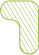
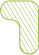

Les gîtes du minett-trail
11 gîtes et un sentier de 70 km traversant les communes de la réserve de biosphère sont en cours d’amènagement afin de faire découvrir aux visiteurs de la réserve de biosphère aussi bien les atouts naturels que les témoins de l’époque industrielle tout au long de longues ou brèves randonnées.
Afin de mettre en valeur l’ensemble du projet, un catalogue, une documentation audiovisuelle ainsi qu’une exposition itinérante sont d’ores et déjà prévus au cours de l’année 2022.
La genèse du projet
Au début, il y avait l’idée du ORT-Sud d’implanter, à travers les paysages méconnus, mais souvent spectaculaires, et notamment les anciennes exploitations minières, un sentier de randonnée à caractère national et aspirant à une large réputation internationale.
Enfin la Capitale européenne de la Culture 2022 est censée attirer des visiteurs lors de cette année charnière pour l’image de la région. Il faudra les héberger, et ainsi le concept du Minett-Trail s’est vu enrichir de l’idée d’ajouter des opportunités d’hébergement pour le public de Esch 2022, et bien-sûr après.
Pour installer sur le sentier bien plus que de simples cabanes en bois, l’OAI a été invité à s’investir dans le projet de gîtes pour en faire un projet architectural ambitieux et innovatif digne d’une Capitale européenne de la Culture. Un programme artistique et socioculturel visera à augmenter l’attrait du sentier.
Dans le respect de la législation en matière de conservation des patrimoines naturel et historique, chaque site a été finalement choisi par chaque commune sur base des critères de réalisabilité, d’originalité et de fonctionnalité pour les futurs hôtes.
Les onze sites retenus sont les suivants :
Lien geoportail du trail ?
Pour ce projet, les communes du PRO-SUD travaillent en partenariat avec « Esch – Capitale européenne de la Culture 2022 », l’ORT sud et et l’Ordre des Architectes et des Ingénieurs-Conseils (OAI)
Les onze sites retenus sont les suivants :
Lien geoportail du trail ?
Pour ce projet, les communes du PRO-SUD travaillent en partenariat avec « Esch – Capitale européenne de la Culture 2022 », l’ORT sud et et l’Ordre des Architectes et des Ingénieurs-Conseils (OAI)